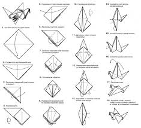
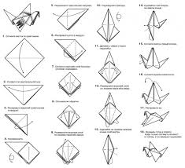
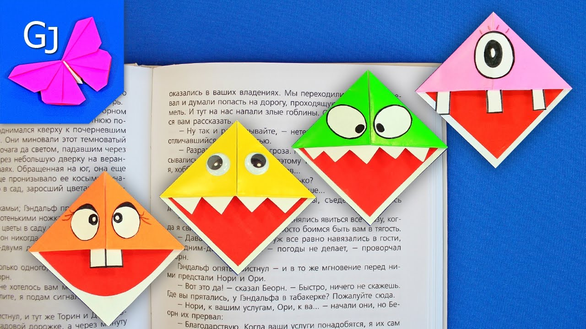

.jpg) 
Перейдите по ссылке.

Перейдите по ссылке.
.jpg)
Согните квадратный лист бумаги по диагонали пополам. Затем еще раз согните по диагонали пополам. Раскройте кармашек в квадрат с другой стороны так же. Поверните квадрат, чтобы внизу он раскрывался. Подогните углы к центральной линии, чтобы внизу получился острый угол. С другой стороны повторите тоже самое. Теперь разогните с двух сторон. Отогните низ и оттяните вверх, чуть прижав центр. Расправте края также к центральной линии. Дальше смотрите по картинке.
Посмотрите видео. Послушайте песню журавли.Согните лист бумаги по диагонали пополам. Подогните края вашего треугольника к его верхушке. Отогните их. Отогните верхний слой бумаги вниз по намеченым линиям. Загните внутрь этого кормашка края треугольника. Разукрасьте вашу закладку. Если надо приклейте ушки или зубки.
Согните квадратный лист бумаги пополам не по диагонали. Пометьте центр вашей полоски согнув её пополам не сгладив сгиб. Подогните к пометке края. Расскройте кармашки в домики. Переверните лист. Края подогните к центру.
Дальше смотрите видео.| Телевизоры | Видеокамеры | |
| Продали | 12 В 11 раз меньше |
? |
| Площадь квартиры | |
| Общая | 73 кв. м 80 кв. дм |
| Жилая | 45 кв.м 50 кв. дм |
| Нежилая | ? |
| Среднем | карие глаза | ||
| рост | вес | ||
| Мужчины | 1.9 | 0.003 | 40% |
| Женщины | 1.7 | 0.002 | 43% |